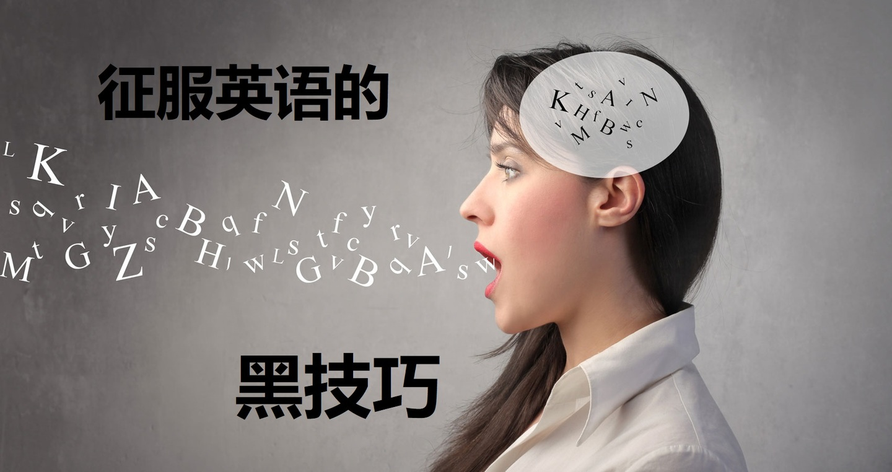
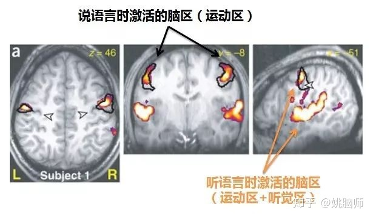
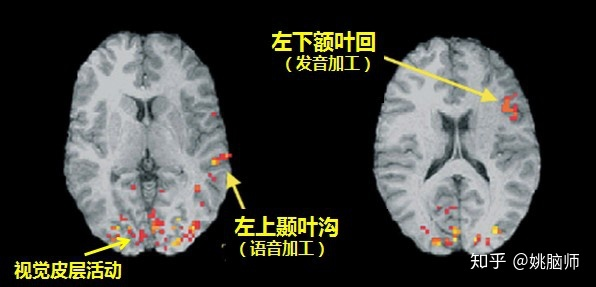
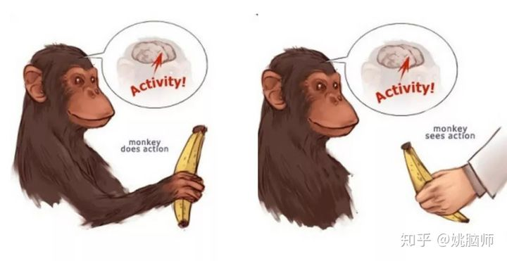

英语学习一直是中国人的一道难题。
为了备考托福雅思，同学们有的日夜背词汇书，刷单词APP，有的买了考试的题集不断的刷题。
下的功夫不少，收效却很有限。
有没有不那么辛苦却又很有效的学习法呢？
有！
姚脑师当年留学前花了大约1年时间准备考雅思。因为懒，期间既没有刻意背单词，也没有刻意刷题，反倒借着备考的名，追了不少英剧（剧单见文末）。就这样不刷题不辛苦不紧张的备考，姚脑师最后口语拿了8分，总分7.5。
姚脑师现为英国曼大心理学老师和博导，日常授课和研究交流都需要用到英语的思维和表达方式。姚脑师凭借英语学习的黑技巧，不论实在苏格兰还是英格兰，说英语都能以假乱真，如同说母语一般。姚脑师这几年有上过几个访谈，如2014年在英国BBC4频道关于八卦研究的访谈以及2017年在Sanguine电台关于内在语音的访谈：链接戳此。大家耳听为实。
在这篇文章里，姚脑师结合自己研究心理语言学以及语言神经科学10年的经验，给大家揭秘大脑的语言学习机制。
英语学习的黑技巧，简单的说就是巧用大脑语言学习的机制，撬动“说”在英语学习中的杠杆作用。
在英语学习中强调“说”的重要性，可不是姚脑师的独到发现。很多前辈如疯狂英语的李阳，很早就强调真正掌握英语的突破点就是——说。
然而“说”的背后有什么样的科学依据呢？它真的能成为拿下听、读、写的制高点吗？
1 “说”在听中的作用
听力不好，是因为听得太少？还是听力题做得太少？
都不是。
语言的听觉加工可以简单地分为：
“听觉加工”（什么声音？）——>“语音加工”（什么音节/字？）——>“语义加工”（什么意思？）三个阶段。
这其中“说”的能力其实对”语音加工”起到非常关键的作用。
语音感知的运动理论（The motor theory of speech perception）认为，大脑听语言的时候并不是一个被动地分析声音信息的过程。大脑的运动系统（即”说”的系统）是会主动地对即将听到的声音进行预判，来优化对语音的识别和加工 [1]。
支持运动理论的证据很多。
比如《自然：神经科学》杂志就曾刊登过一篇脑成像的文章 [2]。研究人员让被试者说单音节（如 pa 或 gi），听单音节，以及听非语言类的声音（如铃声或噪音）。
他们发现，说单音节的时候大脑两侧与”说”相关的运动脑区会被激活。与听非语言类声音相比，听单音节的时候除了激活听觉皮层之外，也会激活说单音节的运动脑区。这证明了听语言是要调动说语言的系统的。

说语言的运动系统对语音的预判是遵从怎样一种机制呢？
我们一旦有说某种语音的经历以后，比如massage里面的 /ʒ/ 这个音，大脑就会建立起怎样说/ʒ/的运动表征（噘嘴闭齿吐气），并和发出来的 /ʒ/ 的声音联系起来。
每一次听到massage这个词，或者预见到massage这个词的时候，大脑就会激活 /ʒ/ 的运动标准，并产生对 /ʒ/ 这个声音的预判。
如果我们没有发声的经验，或是建立了错误的发音，就会导致不能辨别语音，或是语音识别有冲突。
例如，老外学习中文的时候，面对汉语的四个声调会一脸懵逼。这主要是因为他们没有说“妈麻马骂”的经验。因此大脑听到的全都是ma ma ma ma。因为他们听不出声调的区别，所以不断练习听力是没有用的。老外只有通过动嘴发不同的声调，才会在大脑里逐渐建立起对声调的表征。
同理，**很多同学听力不行倒不是因为听得少，而是自己的发音不标准。**比如北方人和南方人说话互相听不懂，主要是因为他们汉语的发音不一样。北方人脑子里想的是 “那个”，听到的是 “辣个”，南方人脑子里想的是 “辣个”，听到的是 “那个” 的时候就会造成交流很吃力。
明白了“说”在听中的重要性之后，我们就要有意识地纠正自己的发音，练习说话时的抑扬顿挫和情感表达，让口语和听力的练习相辅相成，事半功倍。
总之，要想听力稳，发音要标准。
2 “说”在读中的作用
说和听的关系密切不难理解，但是说和读、写能有什么关系呢？
大约在15-35万年前，现代人类进化出了复杂的声道，开始用口头语言来交流。书面的文字是一直到近代才出现的发明（5000年左右），是以语音为基础的一种视觉符号。
我们从出生开始也是先接触了口头语言，然后才学习了文字。这就不难理解为什么在阅读中，大脑会很自然地激活文字所对应的语音。
阅读中的语音加工在阅读绕口令的时候就可以看出来。比如我们默读下面这首诗就会感到很吃力：
牛郎念刘娘 刘娘念牛郎 牛郎年年念刘娘 刘娘年年念牛郎
虽然我们在默读的时候并没有动嘴，但是我们却仍旧有饶舌的感觉。如果我们在默读以上文字的时候实际动嘴（如重复的说“一二三”）来抑制大脑的发音（articulation suppression），就会发现阅读会变得更加困难：有的人阅读速度会明显下降，同一个字要反复阅读多次；有的人则会快速地扫视文字，但是读完完全不记得读的是什么。
这些现象在我们的眼动追踪（eye tracking）实验室里都可以用肉眼观察到（如下图）并用统计的方法证明。
被试者说“一二三”时阅读速度下降（蓝点表示注视点）
在大脑中，阅读的时候除了激活视觉皮层之外，还会激活和语音加工的左上颞区域（left superior temporal regions），以及和发音相关的左下额叶（left inferior frontal lobe）[3]。

**这些证据都说明大脑在阅读的时候并不是被动地加工视觉信息，而是需要调动“说”的系统来激活文字所对应的语音，来理解语义的。**如果发音的系统被干扰（如说 “一二三”），阅读就会受影响。
在练习阅读的时候，尤其是一开始，我们要带语感地读出声，以建立文字和语音的联系。语音在大脑中的表征越牢固，大脑就能越有效的将视觉文字通过声音转变成意思。
简单的说就是：要想读得懂，语音要靠拢。
3 “说”在写中的作用
如果说阅读是一场文字的音乐会，那写作便是对语音的作曲。
同样一句话，怎样写才优美易读呢？
优美的句子不需要华丽的词藻或是复杂的句式，但它一定要有优美的韵律（prosody）。在英文里，让人舒服的韵律基本遵循“轻重轻重轻重轻重”这么一个节奏。
大家来看大文豪莎士比亚写的句子：
“A horse! A horse! My kingdom for a horse!” – Richard III, Act 5, Scene 4. “To be, or not to be. That is the question” – Hamlet, Act 3, Scene 1.
第一句的 horse，horse，kingdom，horse 为重读，剩下的介词量词都为轻读。第二句的 be，not，be，is，question 为重读，剩下的为轻读。
是不是读起来字字有声，特别有节奏感，让人回味无穷？
如果我们打破了这种“轻重轻重”的节奏，就会让文字读起来很别扭。比如我们把“To be, or not to be. That is the question” 改成 “To be, or not to. That’s the question.” 就失去了原句的抑扬顿挫。
如果把轻重的节奏反转，还会让人感到不舒服。比如莎士比亚给女巫写的台词是以“重轻重轻”的节奏写的：
“Double, double toil and trouble; Fireburn and caldron bubble.”
是不是读起来感觉心里的石头没有落地，让人很不安？
所以我们在练习写作的时候，除了要言之有物以外，还要注意文字的韵律。写出来的东西自己先读两遍，读起来顺的才是好句子。
所以，要想文字美，节奏要弄对。
4 “说”得好不好，模仿是王道
“说”如此重要，那怎么才能“说”好呢？
上个世纪末本世纪初，科学家相继在猕猴（macaque）和人的大脑中发现了 “镜像神经元” （mirror neurons）。这些神经元不但在猕猴自己做运动的时候（如抓，握，撕扯）放电，在观察其他个体做类似动作时也会放电，仿佛在镜像中看到是自己在做这些动作似的 [4]。

科学家认为镜像神经元的存在让人类能通过模仿来互相理解对方的行为，对学习以及社交都起到了至关重要的作用 [5]。它强调了大脑的运动系统在语言学习中的重要作用，也为前面提到的语音感知的运动理论（The motor theory of speech perception）提供了生理上的证据 [1]。
这就给我们启示：想要有效地训练“说”的系统，我们就应该积极的模仿母语人的口音，韵律和节奏，以建立自己的“语感”。
姚脑师雅思分数虽然考得高，出国以后依旧很吃力。
到了苏格兰学习工作以后，姚脑师发现完全听不懂苏格兰口音。这是因为姚脑师的大脑只建立了英式发音的表征，没法准确预判和识别苏格兰口音。
于是，姚脑师决定主动模仿苏格兰人的发音，从“说”来突破。
苏格兰人好喝酒，所以每逢周五姚脑师都会去酒吧跟同事聊天。酒吧里吵，说话基本要喊，喊得时候对发音的练习就特别给力。听不懂他们说话的时候就假装听不见，让他们慢点说，教我发音。跟他们交谈的过程中也会碰到一些俚语并及时得到解释。这样逐渐积累下来，自然就习惯了苏格兰的英语，以致于像听到家乡话一样亲切。
我们不光要锻炼“说”的能力，在练习听、读、写上也必须要充分调动 “说”这个系统。“说”会起到杠杆作用，四两拨千斤，撬动整个英语学习。
在练习听力的时候，不要只是戴个耳机被动地听，而是要有意识的模仿听到的每句话，并复述出来。如果条件允许，可以把自己的复述录下来，然后跟原句比较，做进一步的纠正。
在练习阅读的时候，可以先把文章出声地读一遍，然后再默读一遍，建立起文字和声音的联系。练习得多了，阅读时从文字到语义的转化会变得更有效率。
在练习写作的时候，写好一定要自己读出声感觉一下文字的韵律。你写的文字是否有遵从“轻重轻重”的节奏，还是一点乐感都没有？
如果大家能做到以上几点，或是发明自己的练习“说”的方法，相信学起英语来是会事半功倍的。
– End –
参考资料
- Liberman, A. M., & Mattingly, I. G. (1985). The motor theory of speech perception revised. Cognition, 21(1), 1–36.
- Wilson, S. M., Saygin, A. P., Sereno, M. I., &Iacoboni, M. (2004). Listening to speech activates motor areas involved in speech production. Nature neuroscience, 7(7), 701.
- Keller, T. A., Carpenter, P. A., & Just, M. A. (2003). Brain imaging of tongue-twister sentence comprehension: Twisting the tongue and the brain. Brain and language, 84(2), 189-203.
- Di Pellegrino, G., Fadiga, L., Fogassi, L., Gallese, V., &Rizzolatti, G. (1992). Understanding motor events: a neurophysiological study. Experimental brain research, 91(1), 176-180.
- Oberman, L. M., Pineda, J. A., & Ramachandran, V. S. (2007). The human mirror neuron system: a link between action observation and social skills. Social cognitive and affective neuroscience, 2(1), 62-66.
最后，既然要鼓励大家模仿说英语，我在这里就分享一些适合模仿的材料:
当时雅思备考时追的剧：
- 当时印象比较深的就是《Hustle》，讲的是五个骗子劫富济贫的故事。五个人有不同口音。Michael Stone和 Stacie Monroe的发音比较标准。Danny Blue和Ash Morgan带Cockney口音。Albert说的则是美音。
- 《Little Britain》，是英国人吐槽自己的情景剧。黑色幽默。口音比较平民。可以学到很多英国文化。
- 《Skins》也看了一点，记不得是考前还是考后看的，青春剧。
后来看过觉得不错的剧：
喜剧类：《Peep Show》，《The IT Crowd》 戏剧：《Sherlock》，《Downton Abbey》 科幻：《Black Mirror》，《Doctor Who》
挑你喜欢的片子，选你喜欢的角色，每周模仿一集的台词，坚持三个月就是两季的对话。再到英语角都可以带老外飞了！
祝大家学有所成。